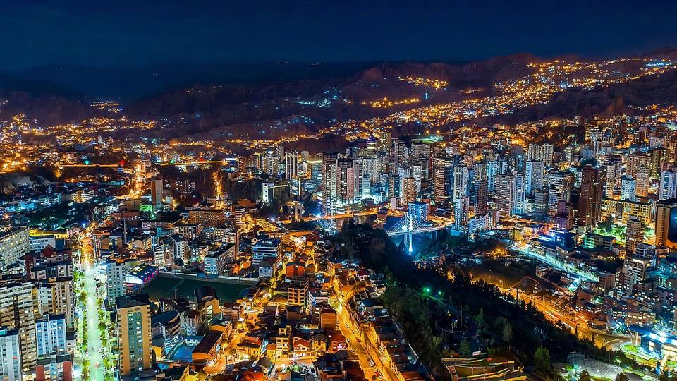
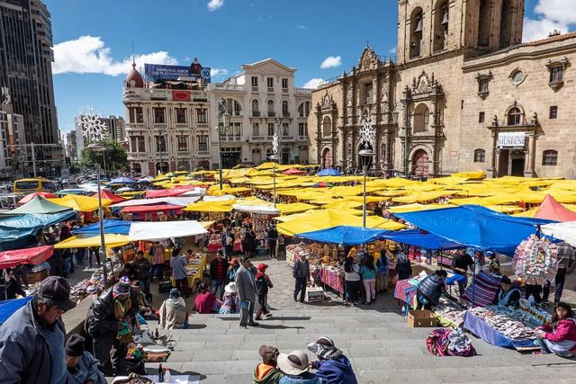
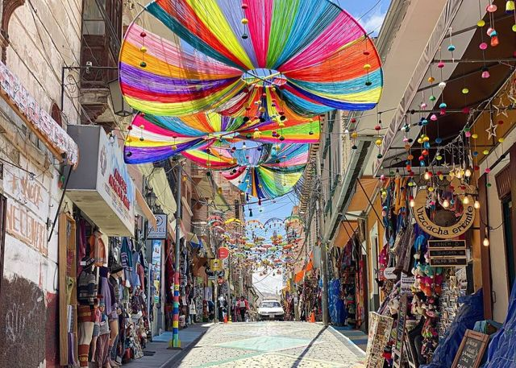
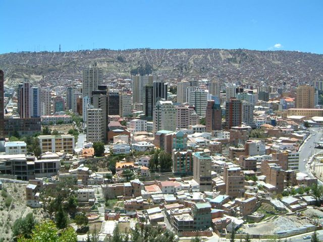
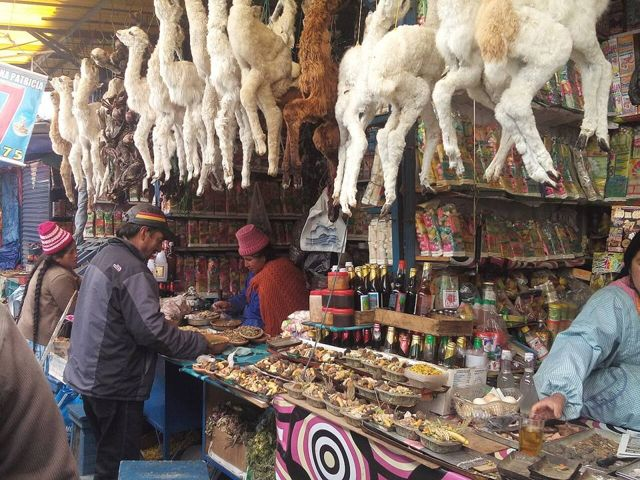
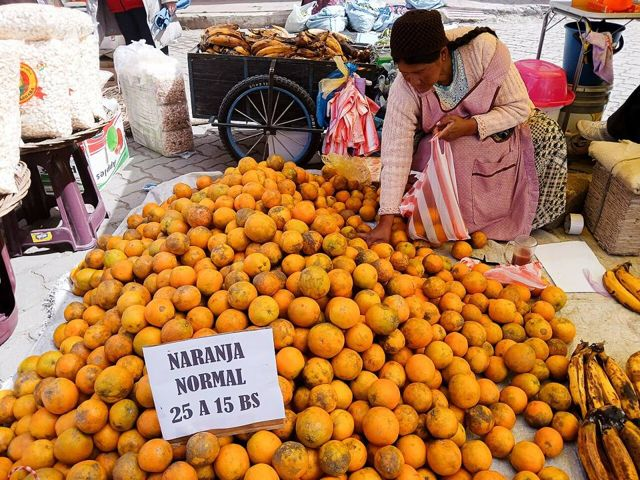
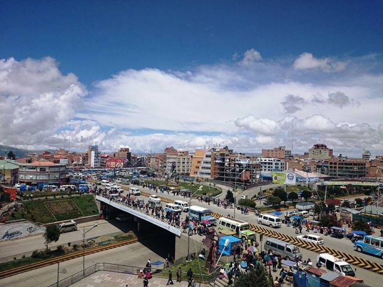

La Paz
Departamento de La Paz · Ciudades

La Paz no se parece a ninguna otra ciudad: metida en una hoyada a 3600 m, con el Illimani nevado de fondo, se recorre en teleférico por encima de los techos. Te cruzas con cholitas de sombrero y con yatiris que venden fetos de llama para la suerte, entre iglesias coloniales y mercados que desbordan las veredas. Fascinante, caótica y que quita el aliento, en todos los sentidos.
Qué hacer
- Mi Teleférico, la red de teleféricos urbanos
- Mercado de las Brujas y calle Jaén
- Plaza Murillo y la iglesia de San Francisco
- El mercado Rodríguez y los sabores paceños
- Mirador Killi Killi al atardecer
Qué comer
- Salteñas paceñasEn La Paz se hace fila en la mañana en las salteñerías famosas. Acompáñala con un jugo de fruta.
- AnticuchosBrochetas de corazón de res marinadas y asadas en la calle de noche, con papa y salsa picante de maní.
- Plato paceñoEl plato típico de La Paz: choclo, habas, papas y queso frito.
- Api con pastelBebida caliente y espesa de maíz morado con canela, con un pastel de queso espolvoreado con azúcar. El desayuno de los mercados.
También aquí
- Fiestas · UNESCO AlasitasLa feria de las miniaturas: se compra en pequeño lo que se desea en grande (casa, auto, billetes, título) y se hace bendecir para el Ekeko, el dios de la abundancia.
- Fiestas · UNESCO Gran PoderLa gran entrada folklórica de La Paz: miles de bailarines de morenada, caporales y diablada cruzan la ciudad con trajes bordados en oro.
- Fiestas Fiesta de las ÑatitasEn el Cementerio General de La Paz se honra a cráneos adornados con flores y lentes de sol, agradeciéndoles su protección. Una tradición sorprendente, a respetar.
- Artesanía y mercados Lana de alpaca y llamaChompas, chalinas y ponchos abrigados para el Altiplano. En La Paz, las calles Sagárnaga y Linares están llenas; verifica que sea lana de verdad.
- Artesanía y mercados Mercado de las BrujasCalles Linares y Jiménez, en La Paz: hierbas, amuletos, fetos de llama y mesas para la Pachamama, preparadas por los yatiris.
- Mitos y leyendas El EkekoHombrecito bigotudo cargado de bolsas de comida, billetes y objetos en miniatura, el Ekeko es el dios aymara de la abundancia. Se le ofrece un cigarrillo y se le confían los deseos, sobre todo en la Alasita.
- Mitos y leyendas El Illimani y el MururataLos cerros son achachilas, ancestros protectores. Se cuenta que el Illimani, celoso, le cortó la cabeza al Mururata de un hondazo: por eso su vecino tiene la cumbre plana.
Cómo llegar a La Paz
El Alto Carretera (bus, auto) · 15 a 30 min
Mi Teleférico (líneas roja, amarilla o azul desde La Paz) o minibús.
El teleférico es lo más fácil, y tiene una vista increíble de la ciudad.
Valle de la Luna Carretera (bus, auto) · 30 a 45 min
Minibús desde el centro o taxi.
Cochabamba Avión · 45 min de vuelo
Vuelos diarios de BoA (varios al día) al aeropuerto de El Alto.
Se llega directo a 4000 m: peor para la aclimatación.
Rurrenabaque Avión · 40 a 50 min de vuelo
Vuelos de BoA y EcoJet (aviones pequeños, a menudo llenos: reserva).
Un vuelo espectacular sobre los Andes.
Sucre Avión · 55 min de vuelo
Vuelos de BoA.
Camino de la Muerte Bicicleta · Día completo
Excursión en bici de montaña con agencia (transporte, bici, comidas). Vuelta en bus a La Paz en la tarde, o uno se queda en Coroico.
Trekking del Choro Carretera (bus, auto) · 1 h
Minibús o taxi hasta La Cumbre, inicio del trekking.
Trinidad Avión · 1 h de vuelo
Vuelos de BoA.
Uyuni Avión · 1 h de vuelo
Vuelos de BoA casi todos los días.
Ahorra una noche de bus.
Tarija Avión · 1 h de vuelo
Vuelos de BoA.
Santa Cruz Avión · 1 h de vuelo
Vuelos de BoA muy frecuentes.
Cobija Avión · 1 h 05 de vuelo
Vuelos de BoA casi todos los días desde el aeropuerto de El Alto.
Chacaltaya Carretera (bus, auto) · 1 h 30
Excursión en minibús desde La Paz (a menudo con el Valle de la Luna).
Huayna Potosí Carretera (bus, auto) · 1 h 30
Transporte incluido en el ascenso guiado.
Tiwanaku Carretera (bus, auto) · 1 h 30
Minibús desde la zona del cementerio de La Paz, o excursión.
Huatajata Carretera (bus, auto) · 1 h 30
Bus La Paz – Copacabana (bajar en Huatajata).
Riberalta Avión · 1 h 30 de vuelo
Vuelos de BoA, no todos los días.
Viscachani Carretera (bus, auto) · cerca de 1 h 30
Minibús de El Alto hacia Patacamaya (parada Viscachani).
Condoriri Carretera (bus, auto) · 2 h
Vehículo privado o agencia.
Trekking del Takesi Carretera (bus, auto) · 2 h 30
Minibús a Ventilla y subida al inicio del trekking.
Comanche Carretera (bus, auto) · 2 a 3 h
Auto con chofer o tour desde La Paz.
Coroico Carretera (bus, auto) · 3 h
Minibús desde la Terminal Minasa (Villa Fátima).
Jesús de Machaca Carretera (bus, auto) · unas 3 h
Bus desde El Alto por Viacha.
Yunga Cruz Carretera (bus, auto) · unas 3 h
Transporte hasta el inicio del trekking, organizado por la agencia.
Copacabana Carretera (bus, auto) · 3 h 30 a 4 h
Buses turísticos y minibuses desde la zona del cementerio (Av. Baptista) o por agencia.
Lleva tus documentos: en Tiquina se baja del bus.
Sorata Carretera (bus, auto) · 3 h 30
Minibús desde la zona del cementerio.
Oruro Carretera (bus, auto) · 3 h 30 a 4 h
Buses cada 30 minutos.
Chulumani Carretera (bus, auto) · unas 4 h
Minibús desde Villa Fátima, en La Paz.
Curahuara Carretera (bus, auto) · unas 4 h
Bus hacia Tambo Quemado / Arica: bajar en el cruce y luego taxi.
Se combina con el parque Sajama.
Sajama Carretera (bus, auto) · 4 h 30
Bus hacia Arica (Chile), bajar en el cruce de Sajama y luego taxi. Más fácil en auto o tour.
Cochabamba Carretera (bus, auto) · 7 a 8 h
Buses de día o de noche desde la Terminal de Cochabamba (muchas empresas, cada hora). De noche conviene un bus cama.
Una subida muy linda al Altiplano. De día para disfrutar el paisaje.
Charazani Carretera (bus, auto) · 8 a 10 h
Bus desde la zona del Cementerio de La Paz, pocas salidas por semana.
Camino largo, en parte de tierra.
Potosí Carretera (bus, auto) · 8 a 10 h (de noche)
Bus nocturno.
Uyuni Carretera (bus, auto) · 9 a 11 h (de noche)
Buses turísticos nocturnos (Todo Turismo, Trans Omar…) desde la Terminal de La Paz.
Rurrenabaque Carretera (bus, auto) · 12 a 15 h
Bus nocturno desde la Terminal Minasa (Villa Fátima).
Fotos de La Paz

-1.jpg){kind=link}










Otros lugares de la región
 El AltoLa gran ciudad aymara en el Altiplano, justo encima de La Paz: una feria gigante, cholets y lucha de cholitas.
El AltoLa gran ciudad aymara en el Altiplano, justo encima de La Paz: una feria gigante, cholets y lucha de cholitas. Valle de la LunaFormaciones de arcilla lunares en la zona sur de La Paz.
Valle de la LunaFormaciones de arcilla lunares en la zona sur de La Paz. ChacaltayaAntigua pista de esquí a 5400 m: la vista más alta de la Cordillera Real.
ChacaltayaAntigua pista de esquí a 5400 m: la vista más alta de la Cordillera Real. Huayna PotosíUn «seismil» conocido por ser accesible, con ascenso guiado en 2 o 3 días.
Huayna PotosíUn «seismil» conocido por ser accesible, con ascenso guiado en 2 o 3 días. Cordillera Real: CondoririLagunas glaciares y cumbres nevadas, a 2 h de La Paz.
Cordillera Real: CondoririLagunas glaciares y cumbres nevadas, a 2 h de La Paz. TiwanakuSitio preinca Patrimonio de la UNESCO: la Puerta del Sol y el templo de Kalasasaya.
TiwanakuSitio preinca Patrimonio de la UNESCO: la Puerta del Sol y el templo de Kalasasaya.- Urus de IruitoUna comunidad uru a orillas del río Desaguadero, guardiana de una cultura muy antigua del lago.
 Jesús de MachacaPueblo aymara del Altiplano y su templo de 1706, al sur del lago Titicaca.
Jesús de MachacaPueblo aymara del Altiplano y su templo de 1706, al sur del lago Titicaca. Comanche y sus Puya raimondiiUn bosque de Puya raimondii, la bromelia más grande del mundo, en el Altiplano.
Comanche y sus Puya raimondiiUn bosque de Puya raimondii, la bromelia más grande del mundo, en el Altiplano.- Aguas termales de ViscachaniBaños de agua tibia en el Altiplano, camino a Oruro, a una hora y media de La Paz.
 SorataPueblo tranquilo al pie del Illampu, base de trekkings.
SorataPueblo tranquilo al pie del Illampu, base de trekkings. Charazani y ApolobambaTierra de los kallawayas, médicos andinos (UNESCO), con aguas termales y grandes trekkings.
Charazani y ApolobambaTierra de los kallawayas, médicos andinos (UNESCO), con aguas termales y grandes trekkings. Camino de la Muerte (bici)La bajada en bicicleta más famosa del mundo: de 4650 m a 1200 m en un día.
Camino de la Muerte (bici)La bajada en bicicleta más famosa del mundo: de 4650 m a 1200 m en un día. Trekking del Choro (camino inca)Tres días por un camino prehispánico, de las nieves de La Cumbre al bosque de los Yungas.
Trekking del Choro (camino inca)Tres días por un camino prehispánico, de las nieves de La Cumbre al bosque de los Yungas. Trekking del Takesi (camino inca)Dos días por uno de los caminos incas mejor conservados de Bolivia, hasta Yanacachi.
Trekking del Takesi (camino inca)Dos días por uno de los caminos incas mejor conservados de Bolivia, hasta Yanacachi. Trekking del Yunga CruzEl más salvaje de los caminos prehispánicos hacia los Yungas: 4 a 5 días al pie del Illimani.
Trekking del Yunga CruzEl más salvaje de los caminos prehispánicos hacia los Yungas: 4 a 5 días al pie del Illimani. Coroico (Yungas)Pueblo en lo alto de los Yungas subtropicales: café, cascadas y piscinas con vista.
Coroico (Yungas)Pueblo en lo alto de los Yungas subtropicales: café, cascadas y piscinas con vista. Chulumani (Sud Yungas)Pueblo de los Sud Yungas entre café, coca y bosques de nubes, lejos de la multitud.
Chulumani (Sud Yungas)Pueblo de los Sud Yungas entre café, coca y bosques de nubes, lejos de la multitud.